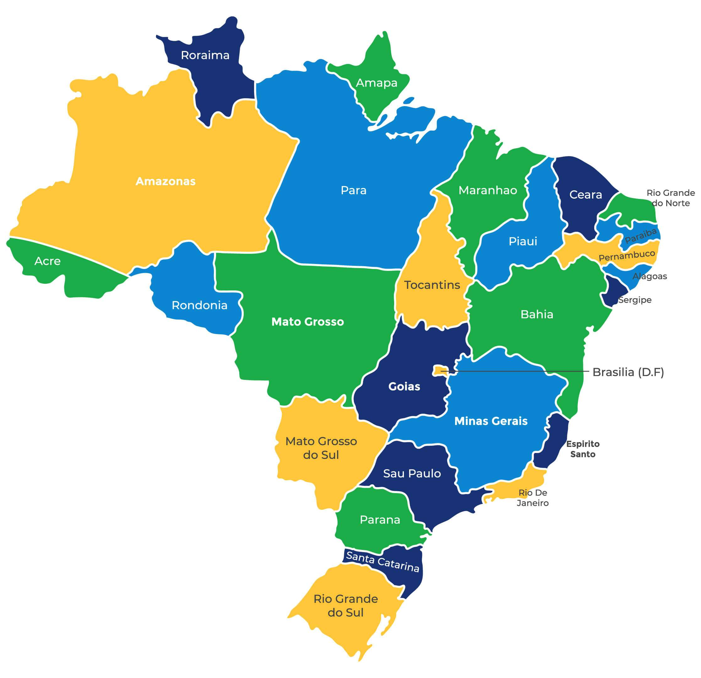
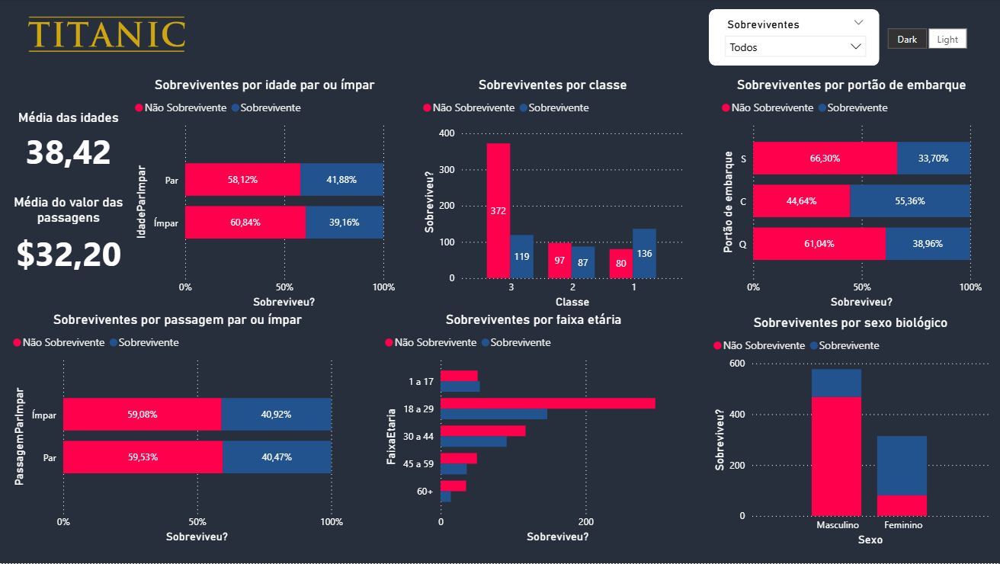
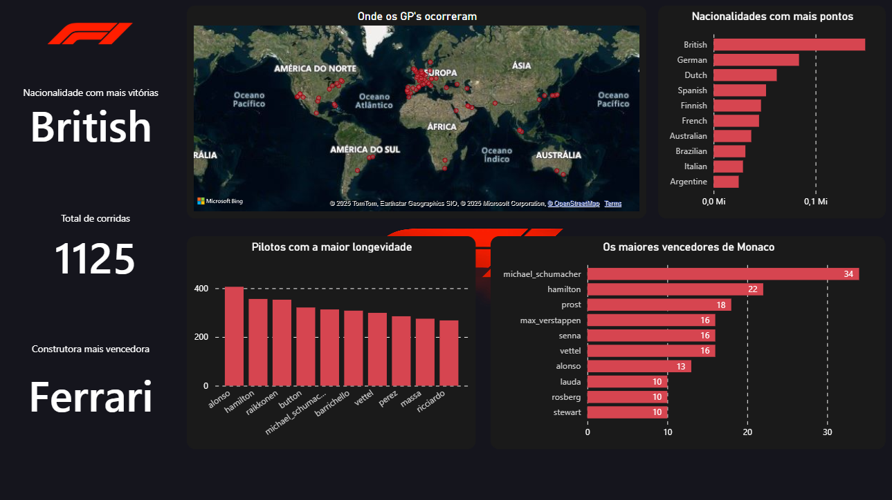

Meus projetos
Mega-sena
Estudo de caso sobre os jogos da mega-sena
- Python
- Pandas
- Manipulação de arquivos xslx
- Limpeza de dados
- Matplotlib

Imigração no Brasil
Estudo de caso sobre o fluxo de imigrantes do Brasil
- Python
- Pandas
- Manipulação de arquivos csv
- Limpeza de dados
- Versionamento com git
App de cadastro de ferramentas
Já pensou em um app 100% nos cuidados da microsoft? Esse é o powerapps.
- Powerapps
- Dataverse
Um projeto sobre as cidades brasileiras
Um projeto em SQL Nostálgico sobre as cidades brasileiras
- SQL
- Filtragem
- Junção
- Agrupamento
- Ordenação
- Agregação

Dashboard do Titanic
Um dashboard detalhado sobre o Titanic, com direito a light e dark mode.
- Power BI
- DAX
- Linguagem M

Machine Learning e NLP nos comentários do IMDB
Uma análise usando ML e NLP nos comentários do IMDB.
- Python
- Machine Learning
- NLP
- Matplotlib
- Pandas
- Seaborn
- Scikit-Learn
Dashboard da F1
Um dashboard detalhado sobre as coriddas da F1.
- Power BI
- DAX
- Linguagem M

Airflow Clima ETL
Automação da extração de dados meteorológicos de Curitiba com uma API de clima usando Apache Airflow. Ideal para pipelines de dados programados e monitoráveis.
- Airflow
- Python
- Docker
- Git
Preço dos Combustíveis
Análise de Preços de Combustíveis com PySpark
- Spark
- PySpark
Sobre mim
Sou um Analista de Dados/BI com experiência consolidada em análise de dados,
tendo atuado em instituições de grande porte, como Braza Bank, Banco do Brasil e Votorantim S.A.
Possuo sólida expertise no desenvolvimento de dashboards e na automação de processos, com o objetivo de transformar
dados em informações estratégicas para a tomada de decisão. Detenho uma base consistente em linguagens de programação,
com foco em engenharia de dados e inteligência de negócios. Sou reconhecido pela capacidade analítica, agilidade na resolução
de problemas e comprometimento com o aprendizado contínuo, sempre direcionado à geração de valor por meio dos dados.
Adicionalmente, obtive êxito em cinco processos seletivos de alta competitividade,
incluindo três aprovações em universidades federais e duas em concursos públicos.
Tenho perfil analítico, foco em resultados, boa comunicação e facilidade para aprender novas tecnologias, sempre buscando entregar soluções eficientes e de qualidade.
Fui aprovado 3 vezes em faculdades federais, além de aprovações em concursos públicos com apenas 20 anos.